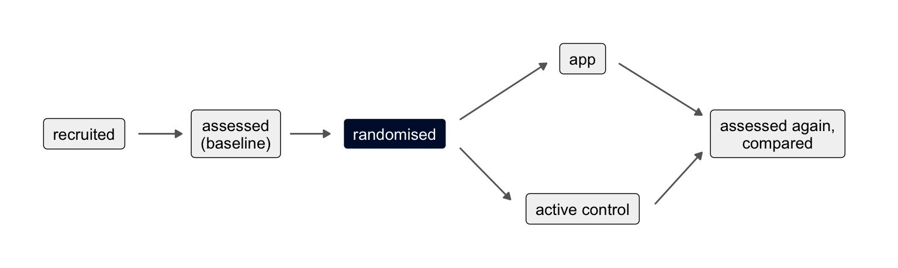
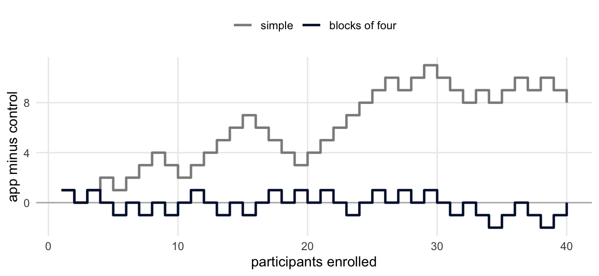
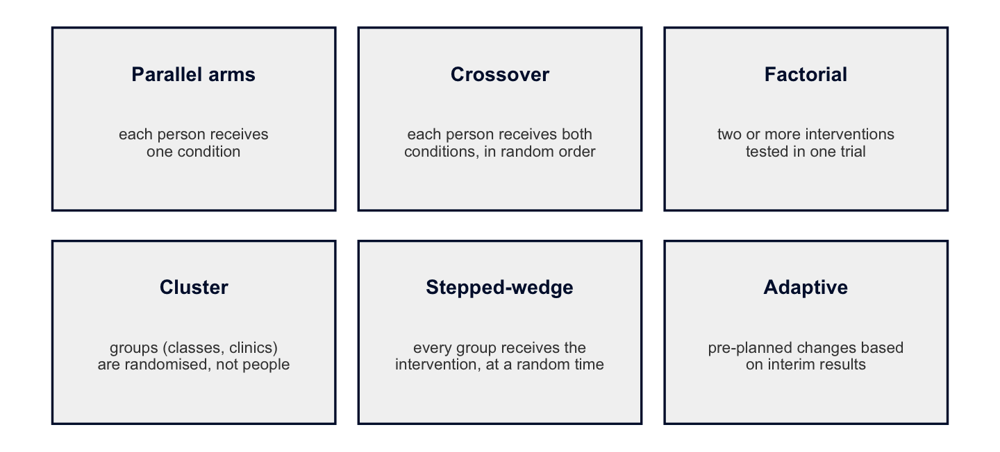
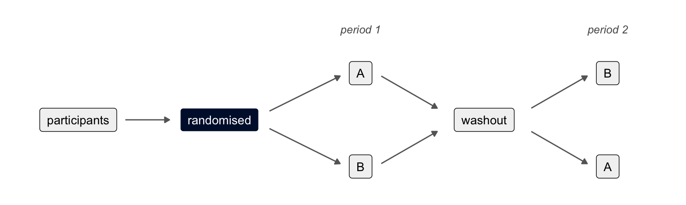
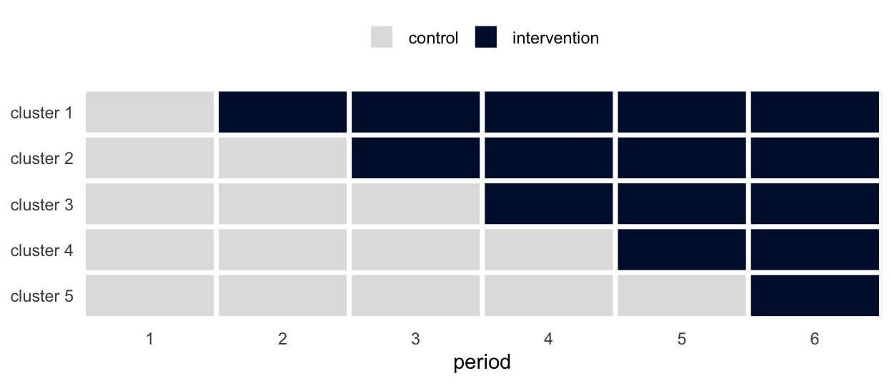
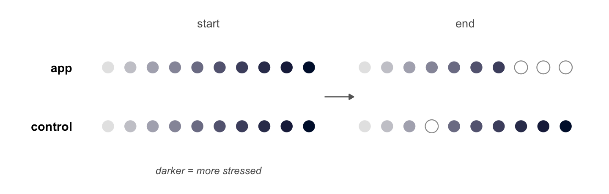
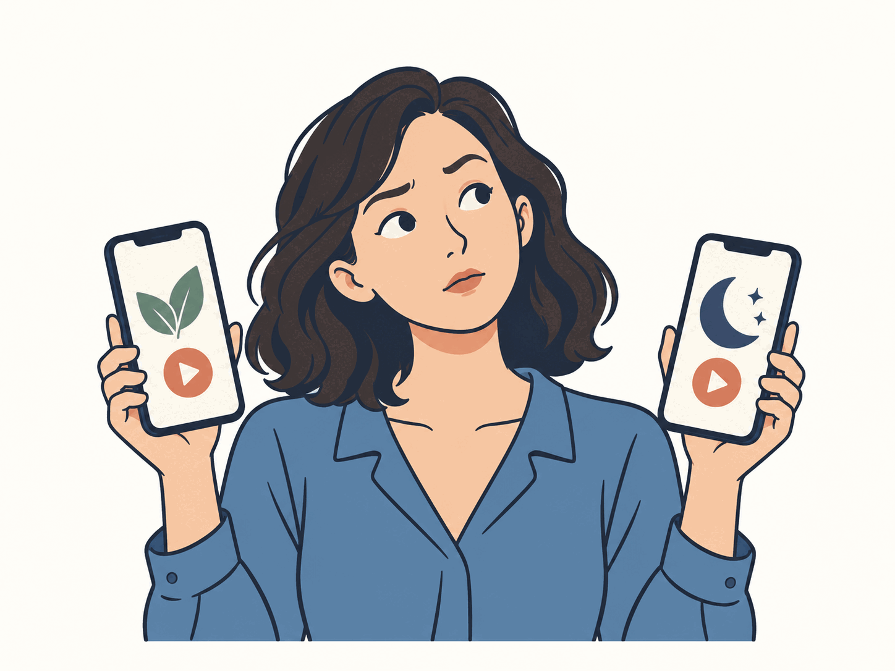
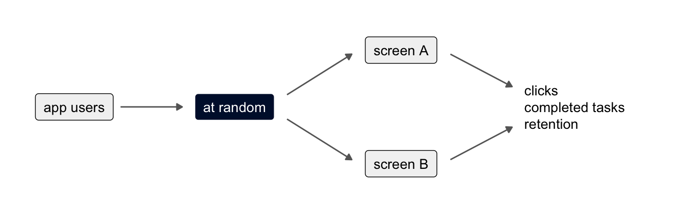

5 Randomised Controlled Trials
Written for this book by Giorgio Arcara, with an AI assistant (Claude). This chapter is not in Irizarry’s Introduction to Data Science.
In Section 4.2 we saw that an association between two variables, such as app use and stress, does not tell us whether one causes the other. Workload, or some variable nobody measured, could produce both. We also saw that a causal claim needs three things: the cause and the outcome covary, the cause comes first, and the alternative explanations have been ruled out. Experiments are the design that deals most directly with the third requirement.
This chapter is about one family of experiments that you will meet constantly in behavioural research and in technology: the randomised controlled trial (RCT). An RCT is an experiment that tests an intervention, such as a therapy, a training programme, or an app, by randomly assigning people to receive it or to receive something else, and comparing what happens to the two groups. It is the design behind the question “does it work?”, whether “it” is a new drug, a mindfulness app, or a new version of a screen. We briefly recall what makes an experiment and why randomisation matters (both are discussed in Chapter 4), then look at how a trial is built, how participants are randomised, which designs exist beyond the simple comparison of two groups, and finally at two problems that are common in trials: dropout and the novelty effect. The industry version of the RCT, the A/B test, closes the chapter.
5.1 Experiments and randomisation, in brief
Two features turn a study into an experiment (Figure 4.1): the researcher manipulates something, deciding who uses the app and who does not, and chance decides who gets what. The manipulation guarantees that the cause comes before the outcome. Random assignment deals with the alternative explanations: because a coin, not the participants, decides who gets the app, no characteristic of the participants can systematically push them into one group. Randomisation balances the groups on average, on the variables we measured and on those we did not, such as motivation (Figure 4.7). Any remaining difference at the end of a trial is therefore either the effect of the intervention or chance, and chance is what the statistical methods of the Basic Statistics part quantify.
Randomisation has two limits. In a single small trial the groups can still differ by chance, and randomisation only protects the comparison between the groups, not the generalisation to people unlike those in the trial. Random assignment and Random sampling in Chapter 4 explain both points, with the simulation behind Figure 4.7.
5.2 What do we compare with?
A trial compares the intervention with a control condition, and the choice of control decides what question the trial answers. In a passive control, participants receive nothing new and continue their usual routine. A difference from a passive control tells us that using the app is better than doing nothing, but the app brings many things at once: daily attention to one’s stress, notifications, the expectation of feeling better. In an active control, participants receive something that matches these non-specific features without the component thought to work, such as a neutral app with the same number of notifications. A difference from an active control is much more specific: it is about what the app does, not about the fact that it is an app.
Whatever the control, it helps to blind whoever can be blinded: the participants, who may report what they think the study expects (demand characteristics), the people who assess the outcome, and the analysts. In app trials, participants usually know which app they are using, but the assessor and the analyst can often be kept unaware of the group. The section Variables and experimental control and the section Bias and control procedures of Chapter 4 discuss controls, manipulation checks and blinding in more detail.
5.3 Anatomy of a trial
Figure 5.1 shows the most common form of RCT, the parallel-arm trial. People are recruited and assessed at the start (the baseline); then they are randomised to one of the arms (here, the app or an active control); after the intervention period, everyone is assessed again and the arms are compared. Note that randomisation comes after the baseline assessment: this way, the assessment cannot be influenced by knowing which group a person is in, and the baseline can be used to check that the groups started from similar values.
The comparison that answers the question of the trial is the one between the arms at the end, not the change from before to after within the intervention arm: the control arm also changes over time, for reasons that have nothing to do with the intervention. Why a change from baseline is not enough on its own is explained in Pre-post designs and baseline measurements in Chapter 4. Whether the difference between the arms could be due to chance is a question for the comparison of two groups (Chapter 18), and how many participants are needed to detect it reliably is a question of power (Chapter 23).
5.4 How to randomise
“Assign at random” sounds like one thing, but there are several ways to do it, and the choice affects how balanced the arms will be. In practice, the allocation of every participant is decided before the trial starts, in a randomisation list generated by software, and participants receive the next allocation on the list as they enrol. In R, generating such a list takes one or two lines. Suppose we plan a trial of a stress-management app with 40 participants.
Simple randomisation
The simplest scheme is the equivalent of tossing a coin for each participant:
set.seed(1)
simple <- sample(c("app", "control"), 40, replace = TRUE)
table(simple)
#> simple
#> app control
#> 24 16Every participant has the same probability of ending up in either arm, but nothing guarantees that the arms will have the same size: here, 24 participants would use the app and 16 would be controls. With hundreds of participants the imbalance becomes negligible in proportion, but in a small trial it wastes power, and if the trial is stopped early the arms can be very unequal.
Block randomisation
Block randomisation solves this problem by shuffling the allocations within small blocks. With blocks of four, each block contains two “app” and two “control”, in a random order:
block <- c("app", "app", "control", "control")
blocked <- as.vector(replicate(10, sample(block)))
head(blocked, 8)
#> [1] "app" "control" "app" "control" "control" "app"
#> [7] "control" "app"
table(blocked)
#> blocked
#> app control
#> 20 20replicate() shuffles the block 10 times, and as.vector() puts the 10 shuffled blocks one after the other. The two arms are now equal after every fourth participant, so they stay balanced however many participants are enrolled (Figure 5.2).

Blocks have a weak point. If the people who enrol participants know the list, or can guess it, they can influence who goes where, for example by delaying a participant they think would do badly until a “control” turns up. With blocks of four, after three allocations the fourth is certain. This is why the list must be kept away from the people who enrol participants, a safeguard called allocation concealment, and why trials often use blocks of varying size (for example, a random mix of blocks of four and of six).
Stratified randomisation
Sometimes a variable is known to matter so much that we do not want to leave its balance to chance, for example baseline stress in a trial of a stress-management app. Stratified randomisation divides the participants into groups, or strata, according to that variable, and randomises separately within each stratum:
participants <- tibble(
id = 1:40,
stress = sample(c("high", "low"), 40, replace = TRUE, prob = c(0.3, 0.7))
)
stratified <- participants |>
group_by(stress) |>
mutate(group = sample(rep(c("app", "control"), length.out = n()))) |>
ungroup()
count(stratified, stress, group)
#> # A tibble: 4 × 3
#> stress group n
#> <chr> <chr> <int>
#> 1 high app 7
#> 2 high control 6
#> 3 low app 14
#> 4 low control 13Within each stratum, the arms differ by at most one participant (when a stratum has an odd number of participants), so the two arms have almost the same proportion of highly stressed people. Here we know all 40 participants in advance; in a real trial participants arrive one at a time, and each stratum has its own block-randomised list. Stratification works well for one or two variables: with many, the strata become too small. It is the randomised version of the blocking and matching described in Matching, blocking, and stratification in Chapter 4.
Sometimes it is not individuals that are randomised, but whole groups of people, such as classes or clinics. This is the cluster randomised trial of the next section.
5.5 Beyond two parallel arms
The parallel-arm trial is the most common design, and the simplest to run, analyse and interpret. But it is not the only one. Figure 5.3 summarises the designs described in this section.

Crossover trials
In a crossover trial, each person receives both conditions, one after the other, in a random order: half use the app first and the control second, half the reverse (Figure 5.4). Between the two periods there is often a washout: a period without any intervention, long enough for the effect of the first condition to disappear.

A crossover is a within-subjects design. Its main advantage is that each person is compared with themselves, so the stable differences between people drop out of the comparison and far fewer participants are needed (see Within-subjects designs in Chapter 4). It also has an ethical advantage: every participant receives the intervention, whichever turns out to be better. Its problems are those of any within-subjects design, with specific names in the trial literature:
- period effect: outcomes can differ between the first and the second period for reasons unrelated to the conditions, for example because participants become familiar with the questionnaires or because the season changes;
- sequence effect: the order matters, so that A followed by B does not give the same results as B followed by A;
- carryover effect: the first condition is still working during the second.
Randomising the order balances the period effect between the conditions, as counterbalancing does (see Counterbalancing in Chapter 4), and the washout limits carryover. But a washout is not always possible. The effect of a sleeping pill wears off in a few days; a skill learned in a cognitive-training programme, or a coping strategy learned with a stress-management app, does not. When the effect of the intervention is meant to last, a crossover is not the right design.
Factorial trials
A factorial trial tests two or more interventions at the same time. Suppose we want to evaluate both a stress-management app and a weekly exercise programme. Instead of running two trials, we randomise participants to the four combinations:
| No exercise programme | Exercise programme | |
|---|---|---|
| No app | neither | exercise only |
| App | app only | both |
Each intervention is compared using all participants: the effect of the app is the comparison of the bottom row with the top row, whatever the exercise condition. The design also tells us whether the two interventions interact: whether the app works better, or worse, in people who also exercise. This is the factorial design of Factorial and mixed designs in Chapter 4, applied to interventions, and it is analysed with a two-way ANOVA (Chapter 19).
Cluster randomised trials
In a cluster randomised trial, the units randomised are not individuals but groups of people: classes, schools, clinics, workplaces. Suppose a university wants to test a programme that teaches students to manage their phone notifications during lectures. If students of the same class are randomised to different arms, they will talk to each other, and some controls will learn the strategies from their classmates: the control arm is contaminated. Randomising whole classes avoids the problem. Cluster trials are also the natural choice when the intervention is delivered to a group, such as a training for all the teachers of a school.
The price is statistical. People in the same cluster resemble each other: they share teachers, schedules and habits. The experimental unit is the cluster (see Units matter in Chapter 4), so 20 classes of 30 students do not carry the information of 600 independently randomised students, and a cluster trial needs more participants than an individually randomised one to reach the same power. Cluster trials also need enough clusters: with only two classes, one per arm, any difference between the classes is confounded with the intervention.
Stepped-wedge trials
A stepped-wedge trial is a cluster trial in which every cluster eventually receives the intervention, but at different times (Figure 5.5). All clusters start in the control condition, and at each step one or more clusters, chosen at random, switch to the intervention, until all of them have it. The design is useful when an intervention will be rolled out to everyone anyway, for practical or ethical reasons, and it can be introduced gradually: the order of the roll-out is randomised, and the clusters still waiting serve as controls.

The weak point is time. Because the intervention is introduced over time, later periods have more clusters with the intervention, and anything else that changes over time (the season, the workload, a new version of the operating system) is partly confounded with it. The analysis must account for the period, which makes stepped-wedge trials more complex to analyse than parallel ones.
Adaptive trials
In the designs seen so far, everything is fixed before the trial starts. An adaptive trial allows some features to change while the trial is running, on the basis of interim analyses of the data collected so far: an arm that is clearly not working can be dropped, more participants can be allocated to the more promising arm, or the sample size can be recalculated. The essential point is that the rules for these changes are specified before the trial starts. Looking at the data repeatedly and changing the trial whenever the results look interesting is exactly the analytic flexibility that inflates false positives (see Outcomes and stopping rules in Chapter 4, and Chapter 29). An adaptive trial makes these looks part of the design, and its analysis corrects for them.
5.6 Who drops out matters
Trials that last weeks or months lose participants along the way: people stop using the app, stop answering the questionnaires, or leave the study. Dropout would be a minor problem if it happened at random. It rarely does. In Figure 5.6, each dot is a participant, and darker dots are more stressed. In the control group one person, with average stress, dropped out. In the app group the three most stressed participants dropped out, perhaps because the app did not help them, or because they had too much on their plate to keep using it.

If we analyse only the people who completed the study, the app group looks less stressed at the end, partly because the most stressed people left it. The comparison is no longer between two randomised groups: dropout has undone part of what randomisation achieved. The usual safeguard is the intention-to-treat analysis: everyone is analysed in the group they were randomised to, whether or not they completed the intervention. This keeps the comparison fair, but it means that the outcomes of the people who dropped out are missing and need a plan, decided before the data are in (Chapter 24). The alternative, analysing only those who completed the intervention as planned (a per-protocol analysis), answers a different question and is usually reported as a secondary analysis.
Dropout is also a result in itself. A trial report should say how many people dropped out of each arm and why, if known: an app that half the participants abandon after a week has a problem, whatever its effect on those who stayed.
5.7 Which version do users like more? A/B tests
Not every trial is about health. A team developing a relaxation app has two versions of the home screen and wants to know which one users prefer (Figure 5.7).

The logic is the same as in any trial. In the lab, we can assign each participant to one version at random (a between-subjects design), or let each participant try both, with the order randomised (a within-subjects design with counterbalancing): if everyone saw version A first, any preference for B could be due to its coming second. A specific problem of comparisons between an old and a new version is the novelty effect: a new design can be liked, or used more, simply because it is new, and the advantage may fade within weeks. A longer follow-up, and comparing two new versions rather than a new one with a familiar one, help to separate novelty from a lasting improvement.
The technology industry runs this kind of experiment on a very large scale, under the name of A/B tests (Figure 5.8). Users of an app or a website are randomly shown version A or version B of a screen, and the versions are compared on logged behaviour: clicks, completed tasks, how many users come back after a week.

An A/B test is a randomised experiment, and everything in this chapter applies to it: randomisation makes the comparison fair, the novelty effect can inflate the advantage of a new version, and users who stop using the app are a form of dropout. Two points deserve attention. First, logged behaviour is still a proxy: a click is not satisfaction, and a longer session can mean engagement or confusion (Chapter 1). Second, with thousands of users even tiny differences become statistically significant, and running many tests and stopping each one when it looks good produces false discoveries, exactly as in academic research (see The same problems outside academia in Chapter 29).
5.8 In short
- A randomised controlled trial tests an intervention by manipulating it and letting chance decide who receives it.
- Randomisation balances the groups on average, on what we measured and on what we did not, so that a difference at the end can be attributed to the intervention or to chance.
- The control condition decides the question: a passive control asks whether the intervention is better than nothing, an active control whether its specific component works.
- Simple randomisation can give arms of different sizes; block randomisation keeps them balanced, and stratified randomisation balances a few important variables. The allocation list must be concealed from the people who enrol participants.
- In a parallel-arm trial each person receives one condition; in a crossover trial each receives both, in random order, which needs fewer participants but only works when the effect wears off.
- Factorial trials test several interventions at once; cluster trials randomise groups of people, at a statistical price; stepped-wedge trials roll the intervention out to every cluster at random times; adaptive trials change in pre-planned ways during the trial.
- Dropout can undo randomisation; analyse everyone as randomised (intention-to-treat) and plan for the missing outcomes.
- A/B tests are randomised experiments on logged behaviour, with the same strengths and the same problems.
A trial does not solve every problem. It tells us what the intervention did, on average, to the kind of people who took part, as measured by the outcome we chose. Whether the result applies to other people, and whether the outcome measures what we care about, are the questions of external validity and measurement discussed in Chapter 4 and Chapter 1.
5.9 Exercises
1. A university offers a free mindfulness app to its students. At the end of the year, the students who used it report less stress than those who did not. Give two explanations of this difference other than an effect of the app. How would you design a study that rules them out?
2. Re-run the simulation of Random assignment in Chapter 4 (the one behind Figure 4.7) with five different seeds, and each time compute the difference in mean motivation between the app and the no-app group under random assignment. How large can the difference get? Now set n <- 400 and repeat. What changes, and why?
3. A trial compares a stress-management app with a passive control and finds that the app group improves more. A colleague says the trial shows that the app’s exercises reduce stress. What else could explain the result? Which control condition would make the conclusion more specific?
4. In a 12-week trial, 30% of the app group and 10% of the control group drop out. The researchers analyse only the participants who completed the study and find a clear advantage for the app. Explain why this result may be misleading, and what they should have done instead.
5. Generate a randomisation list for 48 participants using blocks of six (three “app” and three “control” in each block), and check with table() that the arms are balanced. Then add to the participants tibble of Stratified randomisation a second variable, gender, and randomise within the strata defined by both variables. How many strata are there, and how many participants does the smallest one contain?
6. For each of the following studies, say whether you would use a parallel-arm, crossover, cluster, or stepped-wedge trial, and why: (a) comparing two versions of a relaxation audio track, each listened to for one evening; (b) testing a six-week cognitive-training programme for older adults; (c) testing a programme that trains all the teachers of a school to reduce phone use in class; (d) evaluating a new triage app that a hospital network has decided to introduce in all its ten emergency departments within a year.